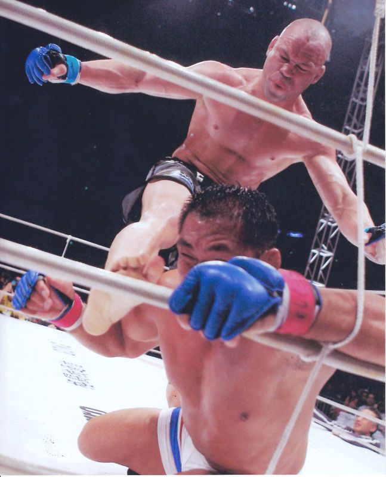

Este artigo ou seção cita fontes, mas que não cobrem todo o conteúdo. Ajude a inserir referências. Conteúdo não verificável pode ser removido.—Encontre fontes: ABW • CAPES • Google (N•L•A) (Abril de 2012)
Nota: Se procura o livro escrito por Hélio Gracie, veja Gracie Jiu-Jitsu (livro).
JIU-JÍTSU
Jiu-jítsu brasileiro (em japonês: ブラジリアン柔術, Burajirian jūjutsu) ou BJJ (Do inglês, Brazilian Jiu-Jitsu) é uma arte marcial e esporte de combate, desenvolvido pela família Gracie, no início do século XX, que se tornou a forma mais difundida e praticada do "Jiu-jitsu" (após o judô) no mundo, principalmente depois das primeiras edições dos torneios de Vale Tudo e artes marciais mistas (MMA), principalmente no UFC, nos idos da década de 1990 e no Pride FC durante o final da década de 1990 e começo da década de 2000.
É uma arte marcial de luta agarrada, onde o objetivo é imobilizar o oponente no chão por meio de uma "finalização", colocando o oponente em uma torção de um membro do corpo (como por exemplo uma chave de braço ou chave de perna) ou estrangulamento (como o mata-leão ou triângulo), forçando o oponente a desistir. O jiu-jitsu brasileiro tem um apreço em focar na luta de solo onde a luta em pé tem papel secundário, ao contrário de outras marciais de luta agarrada.
Apesar do nome da modalidade ser "jiu-jitsu", na verdade, a modalidade não se aplica como o tradicional ju-jutsu, foi desenvolvida como especialização e ênfase das técnicas de controle e luta no chão, ne waza e katame waza, e com menos ênfase às técnicas de luta executadas de pé, tate waza, das técnicas de judô, de Mitsuyo Maeda, representante direto do Instituto Kodokan. Por não serem o foco principal da modalidade, os golpes de ate waza e kansetsu waza, acabam tendo papel coadjuvante e/ou intermédio para a execução de um golpe final de submissão do adversário. O nome do estilo de luta da família Gracie permaneceu como jujutsu, porque na época em que os irmãos Carlos e Hélio Gracie, principalmente, finalizaram seu repertório, o nome "judô" ainda não era de uso comum mas Kodokan jujutsu.
O criador do estilo foi, em princípio, Carlos Gracie, que adaptou o judô com especial apreço à luta de solo, haja vista que seu porte físico punha-lhe em severa desvantagem contra adversários de maior porte. Partindo do princípio de que numa luta de solo, quando projeções ou mesmo chutes e socos não são eficientes, mas alavancas, sim, o porte físico dos contendores torna-se de menor importância. Nessa situação, aquele que tiver mais técnica possuirá consequentemente a vantagem.
"O jiu-jitsu brasileirofoi comprovado como a melhor arte marcial perante as demais com os eventos de VALE TUDO e com o início do UFC que foi criado para tirar a dúvida de milhares de artistas marciais de qual seria a melhor arte marcial 1 contra 1 e o jiu-jitsu brasileiro se mostrou muito mais dominante e eficaz contra seus oponentes nessas disputas."
Se não foram originais em adaptar uma arte marcial provecta, haja vista que no Japão isso já há muito ocorrera com o aiquidô e o próprio judô, oriundos do ju-jutsu, com o caratê, oriundo do te-jutsu de Okinawa, ou mesmo no resto do mundo como o krav maga (Israel) ou a capoeira regional (Brasil), Carlos Gracie e depois Hélio Gracie foram originais em criar um paradigma que prima pela efetividade. Comprovado o seu sucesso em competições, o jiu-jitsu brasileiro serviu de cerne do que viria a ser a modalidade artes marciais mistas.
Até hoje o JIU-JITSU Brasileiro é indispensável para um atleta de MMA.